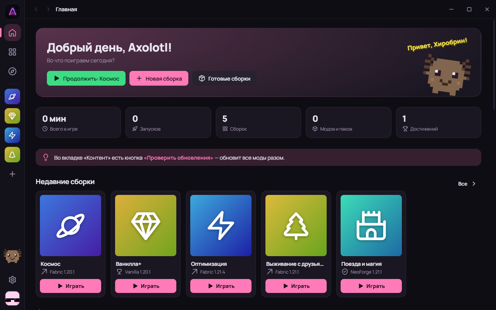
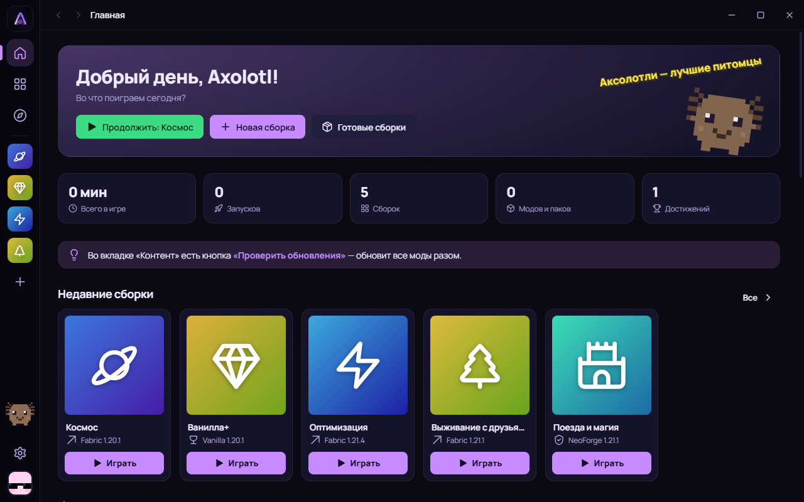
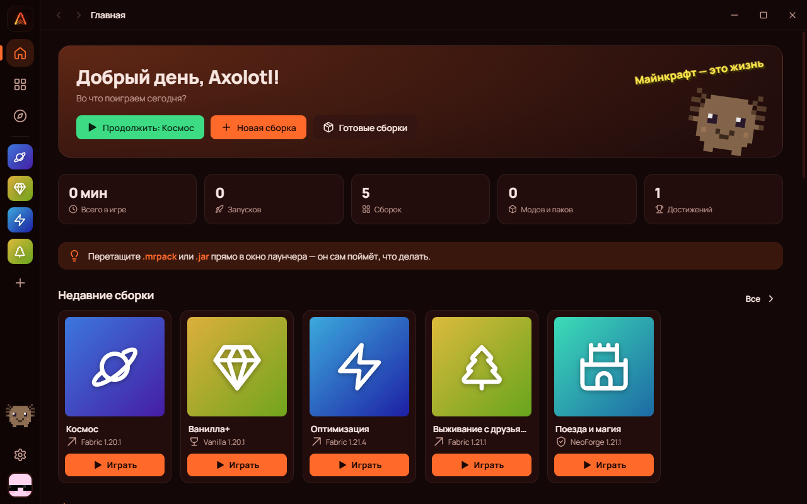
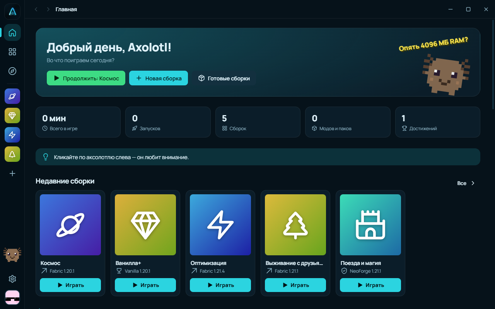
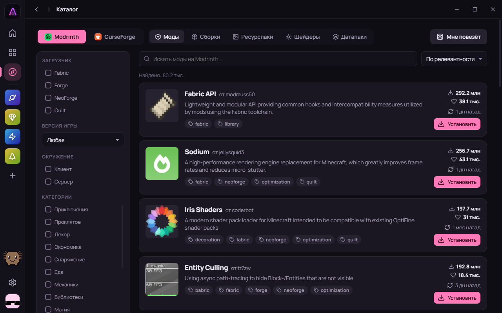
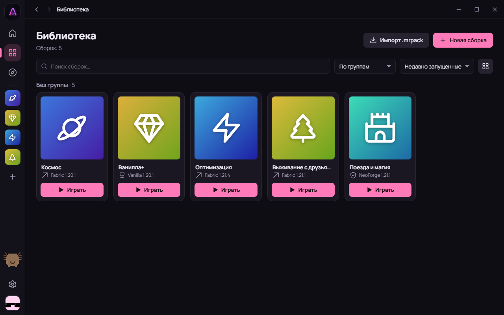
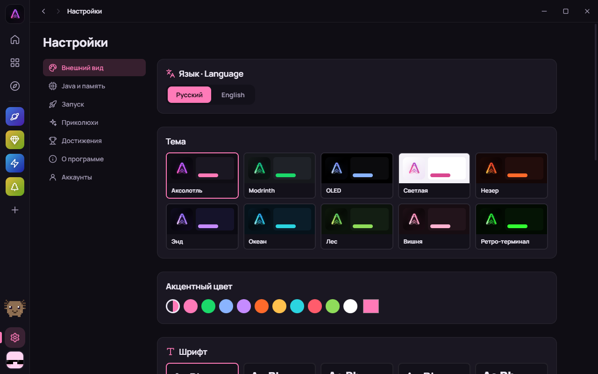

Майнкрафт с модами
без головной боли
Ставь моды и сборки с Modrinth и CurseForge в пару кликов. Если игра вылетит, лаунчер сам найдёт сломанный мод и предложит его починить.

Всё, что нужно для модов
Без ручного копирования jar-файлов, поиска нужной версии Fabric и угадывания, какой мод всё сломал.
Modrinth и CurseForge
Один каталог на два источника: моды, сборки, ресурспаки, шейдеры и датапаки. Зависимости ставятся сами.
Все версии и загрузчики
Vanilla, Fabric, Forge, NeoForge и Quilt. От старых версий до свежих снапшотов, нужная Java скачивается автоматически.
Доктор сборки
Игра вылетела? Лаунчер прочитает лог, найдёт виновный мод и предложит обновить, отключить или доставить недостающий.
10 тем и свой CSS
Аксолотль, Незер, Энд, Океан, OLED, Ретро-терминал… Иконка лаунчера перекрашивается под каждую тему.
Экспорт в .mrpack
Собрал сборку — поделись одним файлом. Друг перетащит его в окно лаунчера и получит то же самое.
Быстрые загрузки
Десятки потоков, проверка хешей, повторы при обрывах, а любую загрузку можно отменить.
Аксолотль-питомец
Живёт в боковой панели, комментирует происходящее и бывает разных цветов. Синего встретить почти невозможно.
Русский и английский
Полностью переведённый интерфейс, достижения, советы и секретики для любопытных.
Вылет? Починим за один клик
Axolaunch читает лог и crash-report, сам разбирается в ошибках Fabric, Forge и NeoForge и объясняет человеческим языком, что случилось.
- Не хватает мода — найдёт и установит с Modrinth
- Мод не для этой версии — обновит до подходящей
- Конфликт или дубль — отключит лишний (можно вернуть)
- Не та Java или мало памяти — поправит настройки
Игра вылетела — нашли причину
Под любое настроение
Десять тем, свой акцентный цвет, шесть шрифтов, фоновая картинка и поле для собственного CSS.



Посмотри изнутри



Готов попробовать?
Установка занимает минуту. Сборки, моды и настройки хранятся у тебя на компьютере.
Частые вопросы
Это бесплатно?
Да, полностью. Код открыт на GitHub под лицензией MIT, рекламы нет.
Windows пишет «Система Windows защитила ваш компьютер»
Лаунчер пока не подписан платным сертификатом, поэтому SmartScreen его не знает. Нажмите «Подробнее» → «Выполнить в любом случае». Исходный код открыт — можно проверить и собрать самому.
Нужна ли лицензия Minecraft?
Для игры нужен аккаунт Microsoft с купленной Minecraft: Java Edition. Вход происходит через официальное окно Microsoft, пароль лаунчер не видит.
Зачем CurseForge просит ключ?
CurseForge пускает сторонние лаунчеры только с личным API-ключом. Он бесплатный: создайте его на console.curseforge.com и вставьте в лаунчер. Modrinth работает без ключей.
Можно перенести сборки из другого лаунчера?
Да: экспортируйте сборку в .mrpack (Modrinth App, Prism и другие это умеют) и перетащите файл в окно Axolaunch.
Нашёл баг или есть идея
Пишите в Issues на GitHub — с логом или скриншотом починим быстрее.